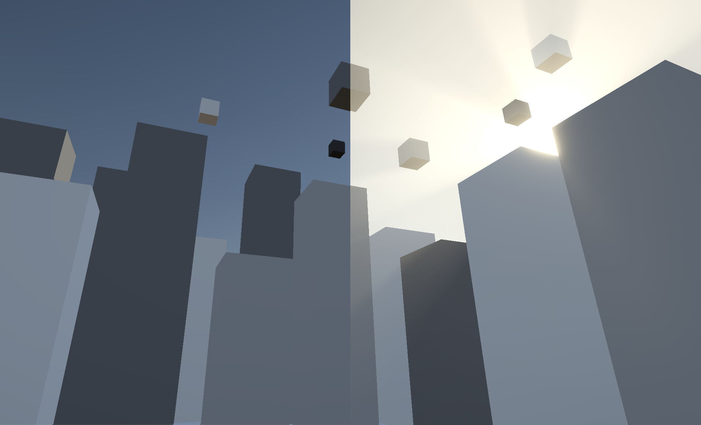
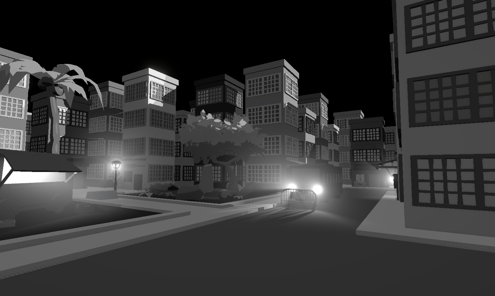
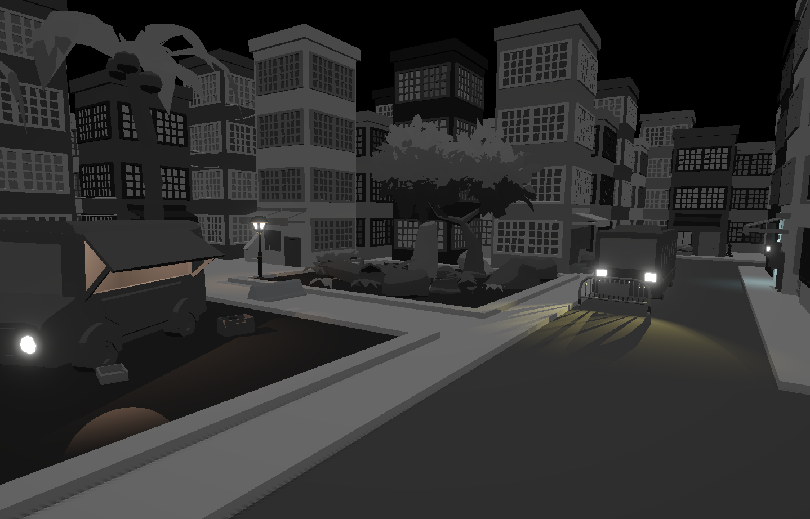

Nathan Gardea - Volumetric Lighting
A raymarching shader built in Unity using HLSL

Overview - Volumetrics use an expensive computation known as raymarching to function. This makes them hardly used in low-end software and leads many people to replace them with particle system/quad based solutions. My goal is to make a volumetric lighting shader that can run efficiently on most platforms. I'll eventually branch off this project to develop other raymarching shaders for fog, clouds, and raytracing.
Current Features
- Main light support. Colors and intensity affect voluemtic color.
- Additional light support. Colors and intensity affect voluemtic color.
- Henyey Greenstein subsurface scattering approximation. (Main light only until additonal light optimizations are made).
- Noise offset to help hide step boundaries.
- Noise offset scales with ray length. (Helps visuals look good from up close and far).
- Forward+ support. (Works with infinite many additional lights, however, more = worse performance).
Future Roadmap
- Vastly improve additional light performance.
- TAA support to help reduce noise artifacts.
- Consider reducing screen resolution before calculations to help performance on higher resolution screens.
- Reduce main light contribututions at farther distances to help reduce blinding main light.
- Forward rendering support.
Main Light Showcase

Main Light feature Disabled (Left), Main light feature Enabled(Right)
Additional Lights Showcase

Additional lights feature Enabled

Additional lights feature Disabled
Main and Additional Showcase

Main and Additional light features enabled